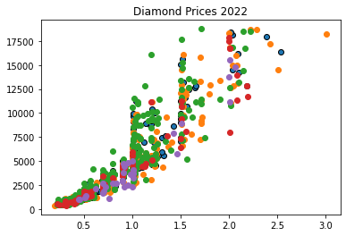

Introduction to Computational Thinking - Part 2
Introduction to Computational Thinking - Part 2#
#these two lines will not change throughout the year
import pandas as pd
import matplotlib.pyplot as plt
diamonds_df=pd.read_csv('/content/Diamond Prices 2022 (Sampled).csv')
---------------------------------------------------------------------------
FileNotFoundError Traceback (most recent call last)
Cell In[1], line 4
2 import pandas as pd
3 import matplotlib.pyplot as plt
----> 4 diamonds_df=pd.read_csv('/content/Diamond Prices 2022 (Sampled).csv')
File ~/mambaforge/envs/nc-book/lib/python3.11/site-packages/pandas/util/_decorators.py:211, in deprecate_kwarg.<locals>._deprecate_kwarg.<locals>.wrapper(*args, **kwargs)
209 else:
210 kwargs[new_arg_name] = new_arg_value
--> 211 return func(*args, **kwargs)
File ~/mambaforge/envs/nc-book/lib/python3.11/site-packages/pandas/util/_decorators.py:331, in deprecate_nonkeyword_arguments.<locals>.decorate.<locals>.wrapper(*args, **kwargs)
325 if len(args) > num_allow_args:
326 warnings.warn(
327 msg.format(arguments=_format_argument_list(allow_args)),
328 FutureWarning,
329 stacklevel=find_stack_level(),
330 )
--> 331 return func(*args, **kwargs)
File ~/mambaforge/envs/nc-book/lib/python3.11/site-packages/pandas/io/parsers/readers.py:950, in read_csv(filepath_or_buffer, sep, delimiter, header, names, index_col, usecols, squeeze, prefix, mangle_dupe_cols, dtype, engine, converters, true_values, false_values, skipinitialspace, skiprows, skipfooter, nrows, na_values, keep_default_na, na_filter, verbose, skip_blank_lines, parse_dates, infer_datetime_format, keep_date_col, date_parser, dayfirst, cache_dates, iterator, chunksize, compression, thousands, decimal, lineterminator, quotechar, quoting, doublequote, escapechar, comment, encoding, encoding_errors, dialect, error_bad_lines, warn_bad_lines, on_bad_lines, delim_whitespace, low_memory, memory_map, float_precision, storage_options)
935 kwds_defaults = _refine_defaults_read(
936 dialect,
937 delimiter,
(...)
946 defaults={"delimiter": ","},
947 )
948 kwds.update(kwds_defaults)
--> 950 return _read(filepath_or_buffer, kwds)
File ~/mambaforge/envs/nc-book/lib/python3.11/site-packages/pandas/io/parsers/readers.py:605, in _read(filepath_or_buffer, kwds)
602 _validate_names(kwds.get("names", None))
604 # Create the parser.
--> 605 parser = TextFileReader(filepath_or_buffer, **kwds)
607 if chunksize or iterator:
608 return parser
File ~/mambaforge/envs/nc-book/lib/python3.11/site-packages/pandas/io/parsers/readers.py:1442, in TextFileReader.__init__(self, f, engine, **kwds)
1439 self.options["has_index_names"] = kwds["has_index_names"]
1441 self.handles: IOHandles | None = None
-> 1442 self._engine = self._make_engine(f, self.engine)
File ~/mambaforge/envs/nc-book/lib/python3.11/site-packages/pandas/io/parsers/readers.py:1735, in TextFileReader._make_engine(self, f, engine)
1733 if "b" not in mode:
1734 mode += "b"
-> 1735 self.handles = get_handle(
1736 f,
1737 mode,
1738 encoding=self.options.get("encoding", None),
1739 compression=self.options.get("compression", None),
1740 memory_map=self.options.get("memory_map", False),
1741 is_text=is_text,
1742 errors=self.options.get("encoding_errors", "strict"),
1743 storage_options=self.options.get("storage_options", None),
1744 )
1745 assert self.handles is not None
1746 f = self.handles.handle
File ~/mambaforge/envs/nc-book/lib/python3.11/site-packages/pandas/io/common.py:856, in get_handle(path_or_buf, mode, encoding, compression, memory_map, is_text, errors, storage_options)
851 elif isinstance(handle, str):
852 # Check whether the filename is to be opened in binary mode.
853 # Binary mode does not support 'encoding' and 'newline'.
854 if ioargs.encoding and "b" not in ioargs.mode:
855 # Encoding
--> 856 handle = open(
857 handle,
858 ioargs.mode,
859 encoding=ioargs.encoding,
860 errors=errors,
861 newline="",
862 )
863 else:
864 # Binary mode
865 handle = open(handle, ioargs.mode)
FileNotFoundError: [Errno 2] No such file or directory: '/content/Diamond Prices 2022 (Sampled).csv'
#prints the first 5 rows of the dataframe
print(diamonds_df.head())
#prints the number of columns, attribute headers, data types, and the number of cells in each column (non-null values)
print(diamonds_df.info())
#prints the measures of central tendency for each numerical attribute
print(diamonds_df.describe())
#removes the rows that contain NULL values
diamonds_df = diamonds_df.dropna()
#pulls off the price column of the data frame
all_prices = diamonds_df['price']
#print(all_prices)
all_carats = diamonds_df['carat']
plt.hist(all_carats)
plt.title('Carats of Diamonds');
plt.show()
#scatter plot
plt.scatter(all_carats, all_prices)
plt.title("Diamond Carats and their Impact on Prices 2022")
plt.xlabel('Carats')
plt.ylabel('Prices')
plt.show()
#pie chart
all_cuts = diamonds_df['cut']
all_cuts.value_counts().plot(kind = 'pie')
plt.title("Diamond Cuts 2022")
plt.show()
#storing only the fair cut diamonds
fair = diamonds_df[diamonds_df['cut'] == 'Fair']
#storing only the good cut diamonds
good = diamonds_df[diamonds_df['cut'] == "Good"]
#storing only the ideal cut diamonds
ideal = diamonds_df[diamonds_df['cut'] == 'Ideal']
#storing only the premium cut diamonds
premium = diamonds_df[diamonds_df['cut']== 'Premium']
#storing only the very good cut diamonds
verygood = diamonds_df[diamonds_df['cut'] == 'Very Good']
#plotting the multi-variables on a scatter plot
plt.scatter(verygood['carat'], verygood['price'], edgecolor = "black")
plt.scatter(premium['carat'], premium['price'])
plt.scatter(ideal['carat'], ideal['price'])
plt.scatter(good['carat'], good['price'])
plt.scatter(fair['carat'], fair['price'])
plt.title('Diamond Prices 2022')
plt.show()
